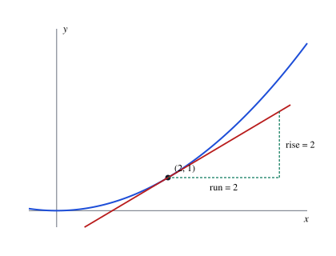
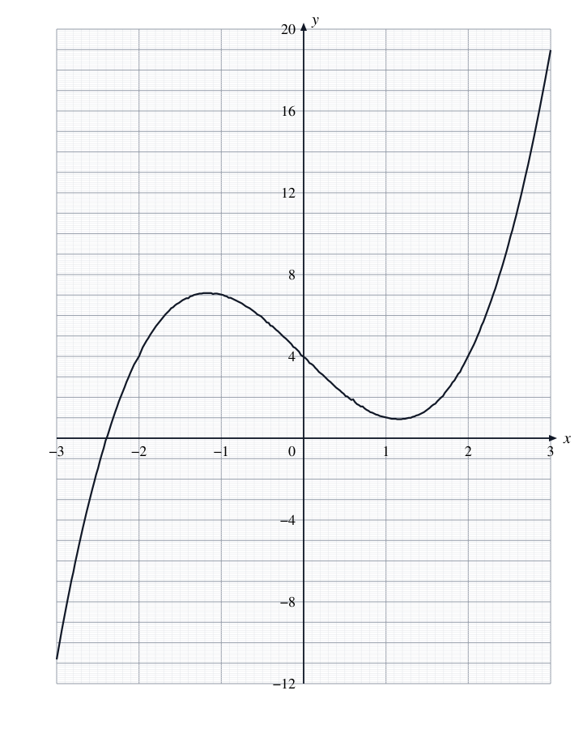
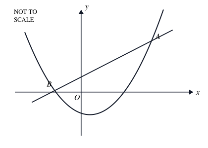
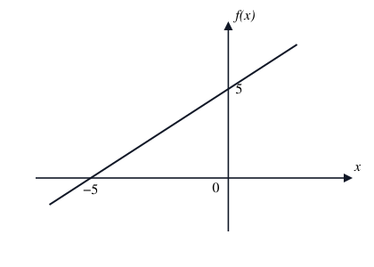
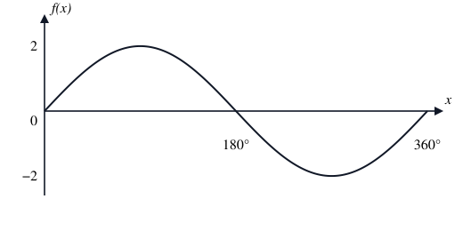

<script>if(location.hostname.endsWith('onrender.com'))location.replace('https://math-sandbox.pages.dev'+location.pathname+location.search+location.hash)</script>
<section class="theory" data-section="IGCSE-18.6">
<h2>18.6 Finding the gradient of a curve</h2>
<p class="src">Based on Cambridge IGCSE Mathematics Core and Extended Coursebook, 3rd edition (Karen Morrison and Nick Hamshaw), Chapter 18 Curved graphs, printed pp.620–623. The wording below is original. It follows the standard Extended treatment of a tangent to a curve, as used in official 0580 Paper 4 questions.</p>
<p class="key-words"><strong>Key words:</strong> <em>tangent to a curve</em>, <em>gradient of a curve</em></p>
<h3>The gradient at a point</h3>
<p>A straight line has one gradient, found from rise over run. A curve changes direction, so it does not have a single gradient. At a chosen point on the curve you can still give a gradient: it is the gradient of the <strong>tangent</strong> to the curve at that point.</p>
<p>The tangent at a point is the straight line that just touches the curve there and has the same direction as the curve at that point. It does not cut across the curve at the point of contact.</p>
<ol>
<li>On a carefully drawn graph, rule a tangent at the required point (or at the required \(x\)-value).</li>
<li>From the tangent, choose two readable points and calculate \(\text{gradient}=\dfrac{\text{rise}}{\text{run}}\).</li>
</ol>
<p>Because the tangent is drawn by eye, an official mark scheme gives a short interval of acceptable values, not one exact number.</p>
<figure><figcaption>The tangent to \(y=\dfrac{x^2}{4}\) at \((2,1)\) has rise \(2\) and run \(2\), so its gradient is \(1\).</figcaption></figure>
<div class="ms-widget" data-widget="tangent-gradient"></div>
<script src="../../assets/widget-kinds-pkg13.js"></script>
<div class="worked-example">
<h4>Worked example 1: Rise over run from a drawn tangent</h4>
<p class="src">Standard tangent method (18.6). New numbers.</p>
<p>A tangent has been drawn at a point on a curve. The tangent passes through \((1,2)\) and \((4,8)\). Find the gradient of the curve at that point.</p>
<ol class="steps">
<li>The gradient of the tangent is \(\dfrac{8-2}{4-1}=\dfrac{6}{3}=2\) <span class="mark">B1</span></li>
</ol>
<p class="final"><strong>Answer:</strong> \(2\)</p>
</div>
<div class="worked-example">
<h4>Worked example 2: A negative gradient</h4>
<p class="src">Standard tangent method (18.6). New numbers.</p>
<p>A tangent at a point on a curve passes through \((-2,5)\) and \((2,1)\). Find the gradient of the curve at that point.</p>
<ol class="steps">
<li>\(\dfrac{1-5}{2-(-2)}=\dfrac{-4}{4}=-1\) <span class="mark">B1</span></li>
</ol>
<p class="final"><strong>Answer:</strong> \(-1\)</p>
</div>
<h3>Common mistakes</h3>
<ul>
<li>Using a chord through two points on the curve, instead of a tangent that touches at the required point.</li>
<li>Reading the run or the rise from the wrong squares, or forgetting the scale on each axis.</li>
<li>Giving a gradient to many decimal places when the method is an estimate from a drawing.</li>
</ul>
<h3>Past paper</h3>
<p class="src">0580/41/O/N/20 Q5, official QP and official MS.</p>
<p>(a) The diagram shows the graph of \(y=\mathrm{f}(x)\) for \(-3\leqslant x\leqslant 3\).</p>
<figure></figure>
<p>(i) Solve \(\mathrm{f}(x)=14\). [1]</p>
<p>(ii) By drawing a suitable tangent, find an estimate of the gradient of the graph at the point \((-2, 4)\). [3]</p>
<p>(iii) By drawing a suitable straight line on the grid, solve \(\mathrm{f}(x)=2x-2\) for \(-3\leqslant x\leqslant 3\). [3]</p>
<p>(b) The diagram shows a curve with equation \(y=2x^2-2x-7\).</p>
<figure></figure>
<p>The straight line with equation \(y=3x+5\) intersects the curve at the points \(A\) and \(B\).</p>
<p>Find the coordinates of the points \(A\) and \(B\). [5]</p>
<details><summary>Mark scheme</summary>
<ol class="steps">
<li>(a)(i) \(x\) is from \(2.7\) to \(2.8\). <span class="mark">B1</span></li>
<li>(a)(ii) A tangent is ruled at \(x=-2\). <span class="mark">B1</span></li>
<li>(a)(ii) The estimate of the gradient is from \(6\) to \(10\). 2 marks, dependent on a tangent at \(x=-2\), or a close attempt; or M1 for rise/run. <span class="mark">B2</span></li>
<li>(a)(iii) The line \(y=2x-2\) is ruled, and \(x\) is from \(-2.9\) to \(-2.8\). <span class="mark">B3</span></li>
<li>(b) Equate \(2x^2-2x-7=3x+5\). <span class="mark">M1</span></li>
<li>(b) Factorise as \((2x+3)(x-4)=0\), or use the quadratic formula. <span class="mark">M1</span></li>
<li>(b) \(A=(4,17)\) and \(B=(-1.5,0.5)\). <span class="mark">B3</span></li>
</ol>
</details>
<h3>Past paper</h3>
<p class="src">0580/43/M/J/20 Q10, official QP and official MS.</p>
<p>(a) The diagrams show the graphs of two functions.</p>
<p>Write down each function.</p>
<p>(i)</p>
<figure></figure>
<p>\(f(x)=\) ................................................ [2]</p>
<p>(ii)</p>
<figure></figure>
<p>\(f(x)=\) ................................................ [2]</p>
<p>(b) The diagram shows the graph of another function.</p>
<figure><figcaption>The graph for part (b), with the point \(P\) labelled.</figcaption></figure>
<p>By drawing a suitable tangent, find an estimate for the gradient of the function at the point \(P\). [3]</p>
<details><summary>Mark scheme</summary>
<ol class="steps">
<li>(a)(i) \(x+5\). 2 marks, with B1 for a linear equation with positive gradient or intercept \(5\). <span class="mark">B2</span></li>
<li>(a)(ii) \(2\sin x\), or equivalent. 2 marks, with B1 for recognition of sin or cos(\(x-90\)). <span class="mark">B2</span></li>
<li>(b) A tangent is ruled at \(P\) (B1). The estimate is \(1.3\) to \(1.4\) (B2, dependent on a tangent drawn; or M1 for rise/run). <span class="mark">B3</span></li>
</ol>
</details>
<h3>Quick checks</h3>
<div class="quick-check">
<h4>Quick check 1</h4>
<p>A tangent at a point on a curve passes through \((0,1)\) and \((4,9)\). What is the gradient of the curve at that point?</p>
<details><summary>Worked solution</summary>
<ol class="steps">
<li>\(\dfrac{9-1}{4-0}=\dfrac{8}{4}=2\)</li>
</ol>
<p class="final"><strong>Answer:</strong> \(2\)</p>
</details>
</div>
<div class="quick-check">
<h4>Quick check 2</h4>
<p>A tangent at a point on a curve passes through \((-3,8)\) and \((1,0)\). What is the gradient of the curve at that point?</p>
<details><summary>Worked solution</summary>
<ol class="steps">
<li>\(\dfrac{0-8}{1-(-3)}=\dfrac{-8}{4}=-2\)</li>
</ol>
<p class="final"><strong>Answer:</strong> \(-2\)</p>
</details>
</div>
<div class="quick-check">
<h4>Quick check 3</h4>
<p>A tangent at a point on a curve passes through \((1,4)\) and \((3,10)\). What is the gradient of the curve at that point?</p>
<details><summary>Worked solution</summary>
<ol class="steps">
<li>\(\dfrac{10-4}{3-1}=\dfrac{6}{2}=3\)</li>
</ol>
<p class="final"><strong>Answer:</strong> \(3\)</p>
</details>
</div>
</section>
